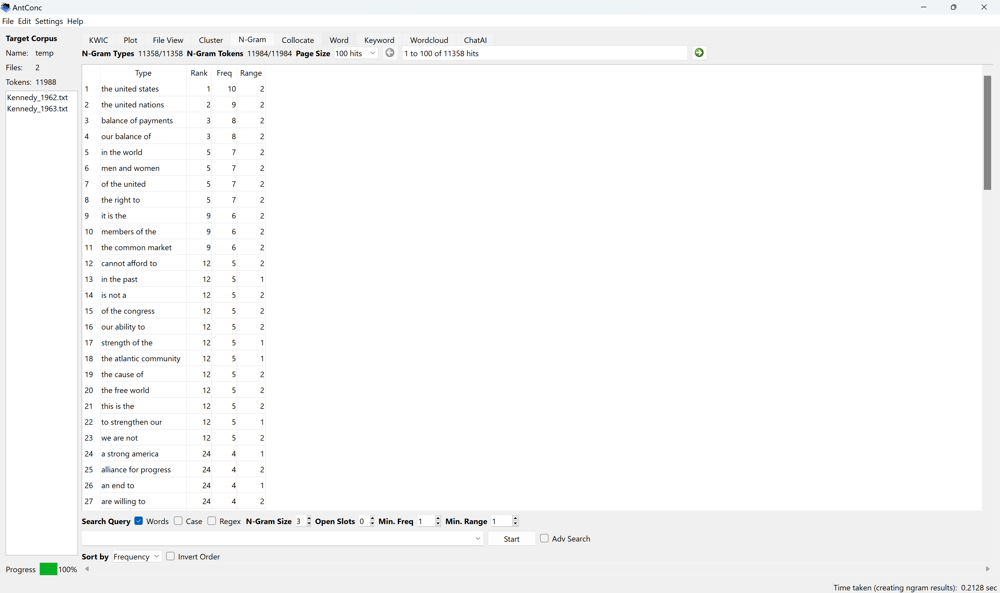
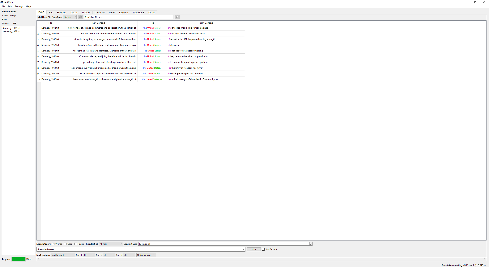
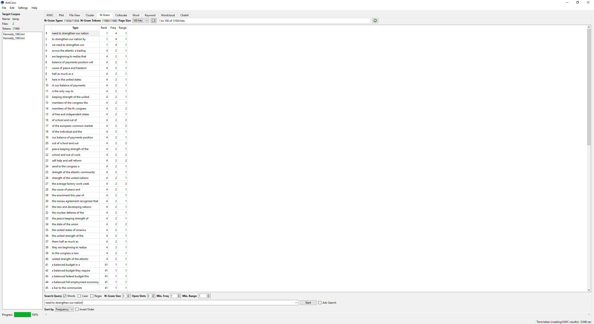
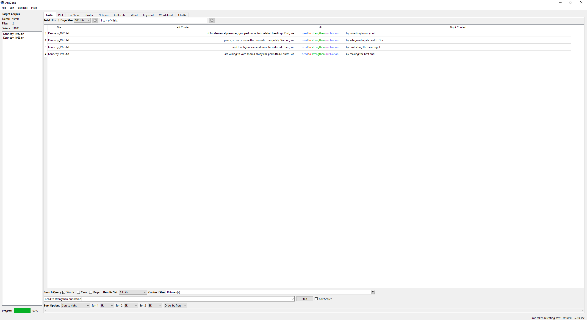
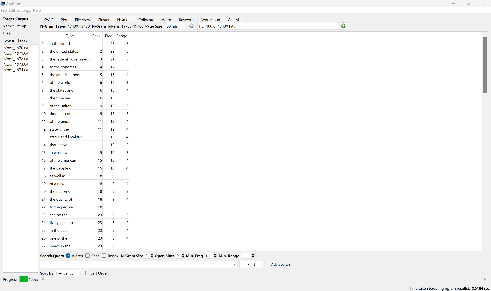
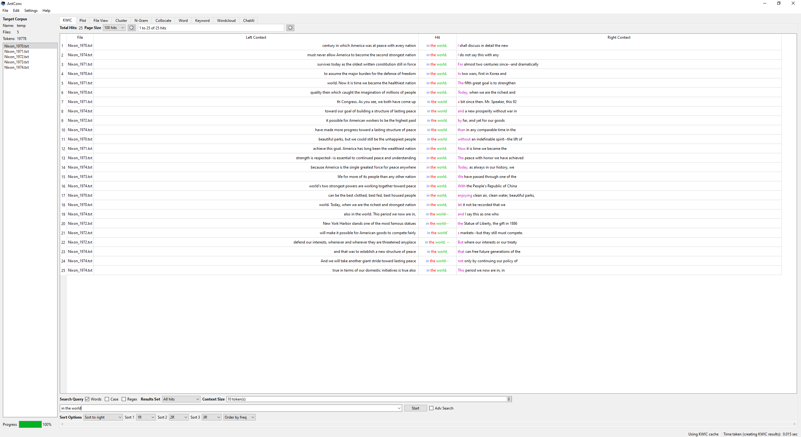
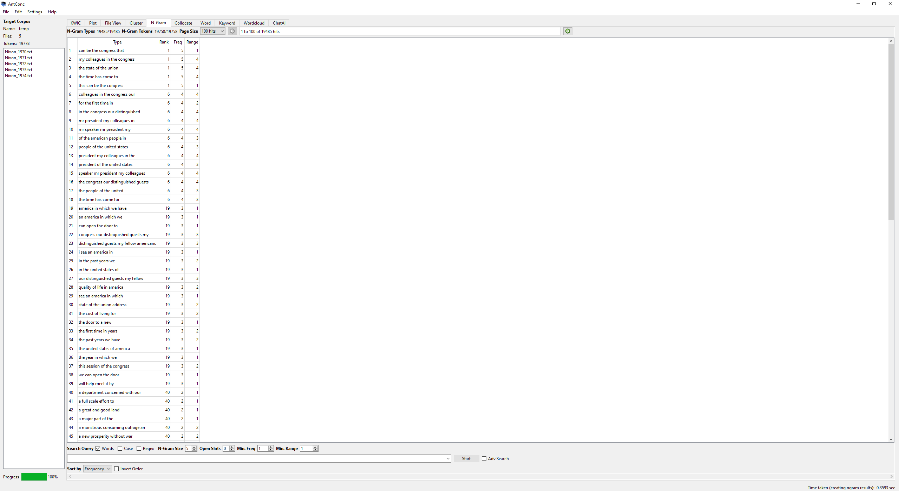
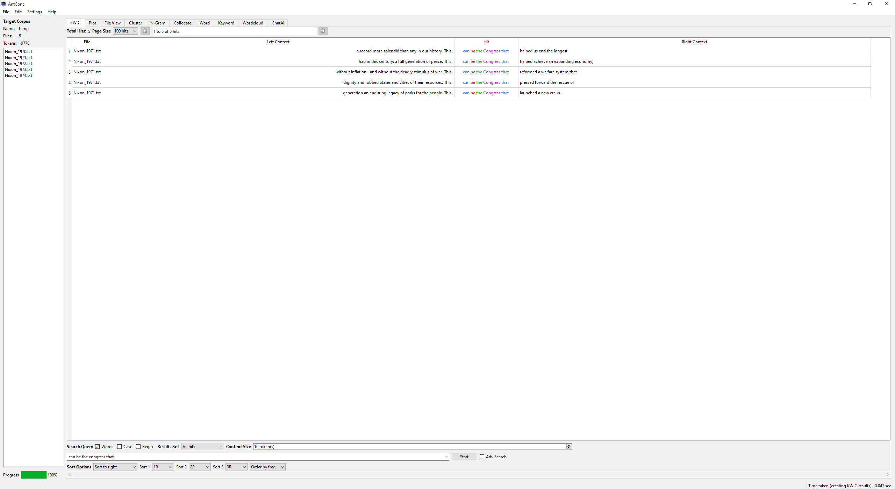

TEXT COMPARISON
For my text analysis with AntConc and Voyant I compared Kennedy's State of the Union with Nixon's State of the Union.
Kennedy





Voyant — Kennedy Dynamic Network
"new" — 59 uses | "world" — 43 | "nations" — 39
Text files:
Nixon





Voyant — Nixon Dynamic Network
"new" — 115 uses | "people" — 105 | "congress" — 102
Text files:
Nixon_1970 | Nixon_1971 | Nixon_1972 | Nixon_1973 | Nixon_1974
Comparison
I wanted to see if Kennedy showed up in Nixon's speeches given they ran against each other in 1960. Kennedy's corpus was smaller (11,988 tokens vs Nixon's 19,778) — which made N-gram sizes more limited. Kennedy's 5-grams centered on people: safety, economy, health, rights. Nixon's centered on Congress and its accomplishments. The shift from people-focused to government-focused rhetoric across the 60s is striking, possibly shaped by Vietnam, the Cuban Missile Crisis, and Bay of Pigs.
Why?
One of my great-uncles was fascinated by the Kennedy assassination, so I grew up around a lot of material on both Kennedy and Nixon. It seemed like a natural pair to dig into — and the context around those speeches makes the language choices even more interesting.